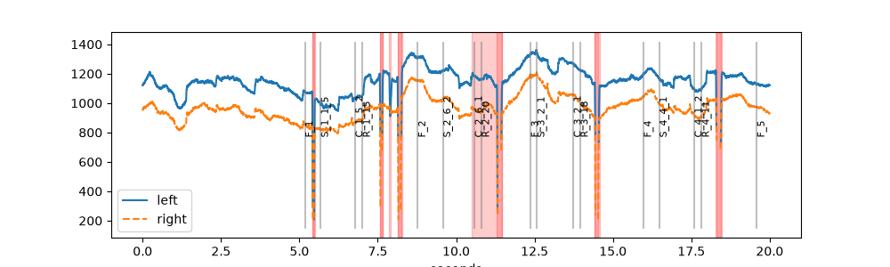
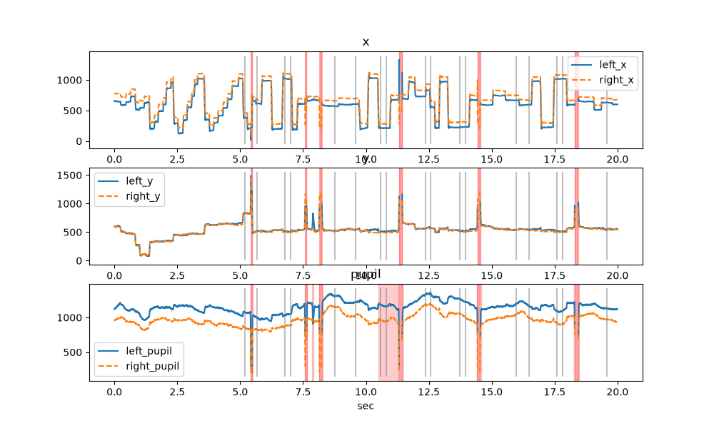
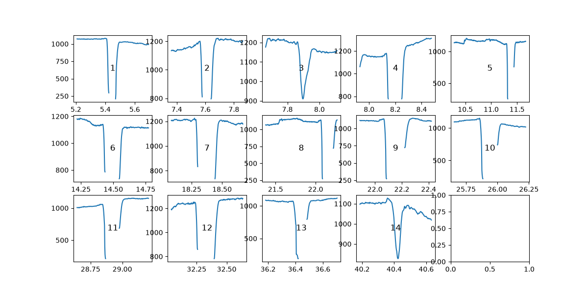
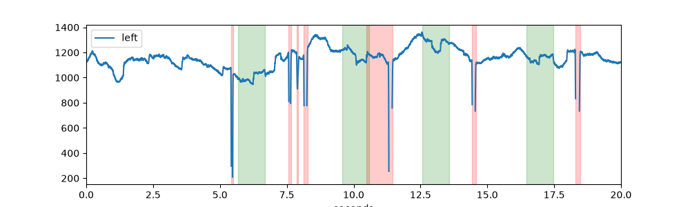
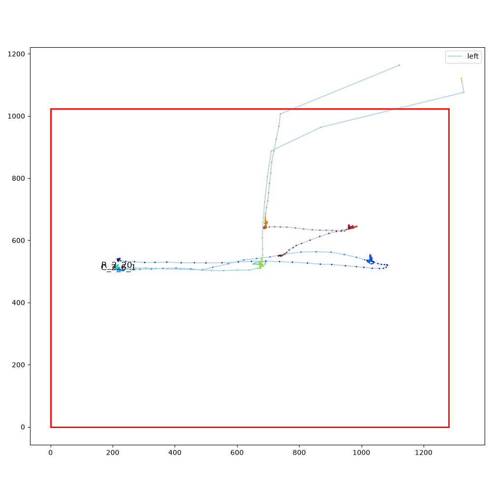
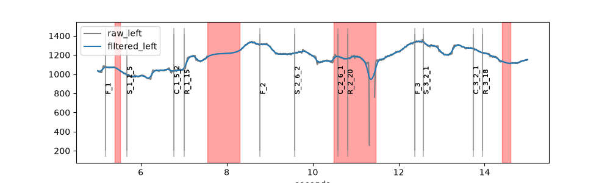

Plotting#
Every data object has a plot attribute with the plotting functions
that fit its data: a PupilPlotter for PupilData, a
GazePlotter for GazeData and an EyePlotter (with
both sets of functions) for EyeData. All plots use
matplotlib, so they can be adjusted and saved as usual. Most
functions take eyes=, variables=, plot_range= and units=
arguments.
The examples on this page use the short example dataset with detected blinks:
import pypillometry as pp
from pypillometry import u
import matplotlib.pyplot as plt
d = pp.get_example_data("rlmw_002_short")
d.pupil_blinks_detect(apply_mask=True)
Each function’s API documentation has another example.
Time series#
Make a plot of the pupil data using matplotlib. |
|
Plot a part of the EyeData. |
|
Plot masked intervals for specified eyes and variables. |
pupil_plot() shows the pupil size of all eyes in one
plot, with blinks (red) and events (grey lines):
plt.figure(figsize=(10, 3))
d.plot.pupil_plot(plot_range=(0, 20) * u.sec)

plot_timeseries() plots each variable (here: gaze and
pupil) in its own panel:
plt.figure(figsize=(10, 6))
d.plot.plot_timeseries(plot_range=(0, 20) * u.sec, units="sec")

To save a plot, use matplotlib as usual, e.g.
plt.savefig("pupil.pdf").
Long recordings#
Plotting a whole recording at once hides the details. These functions split
it into many small plots (one figure each), optionally written to a
multi-page PDF file with pdf_file=. For interactive browsing, the
viewer is usually faster.
Plot the whole dataset chunked up into segments (usually to a PDF file). |
|
Plot the whole dataset chunked up into segments (usually to a PDF file). |
Blinks and intervals#
Plot detected blinks in separate subplots. |
|
Plotting data around intervals. |
|
Plot intervals as horizontal lines on a timeline. |
|
Draw highlighted backgrounds for each interval on existing plot(s). |
|
Plot events as points on a time axis. |
plot_blinks() draws one small plot per blink, e.g., to
check blink detection and interpolation:
d.plot.plot_blinks(eyes="left", nrow=3, ncol=5, figsize=(12, 6),
units="sec")

plot_intervals() does the same for any
Intervals, here the three seconds around each stimulus:
intervals = d.get_intervals("S_", (-500, 2500) * u.ms)
d.plot.plot_intervals(intervals, variables="pupil", nrow=2, ncol=5,
figsize=(12, 4))

Intervals.plot_highlight() shades intervals on an existing plot:
intervals = d.get_intervals("S_", (0, 1000) * u.ms, units="sec")
plt.figure(figsize=(10, 3))
d.plot.pupil_plot(eyes="left", plot_range=(0, 20) * u.sec,
show_events=False)
intervals.plot_highlight(color="green", alpha=0.2)
plt.xlim(0, 20)

Gaze#
Plot EyeData as a heatmap. |
|
Plot EyeData as a scanpath. |
|
Plot spatial calibration data for one or more eyes in subplots. |
d.plot.plot_heatmap(eyes="left")
d.plot.plot_scanpath(plot_range=(10, 12) * u.sec, eyes="left")


plot_calibration() shows the calibration and validation
results of the eye tracker (see Spatial calibration).
Regions of interest can be drawn on top of heatmaps and scan paths (see
Experimental setup and regions of interest).
Comparing versions of the data#
To compare, e.g., raw and filtered data, plot both into the same axes and
give each a label_prefix and a style:
filtered = d.pupil_lowpass_filter(cutoff=4, inplace=False)
plt.figure(figsize=(10, 3))
d.plot.pupil_plot(eyes="left", plot_range=(5, 15) * u.sec,
label_prefix="raw", style={"color": "grey"})
filtered.plot.pupil_plot(eyes="left", plot_range=(5, 15) * u.sec,
label_prefix="filtered")

See the tutorial Plotting pupillometric data for exploration for more examples.